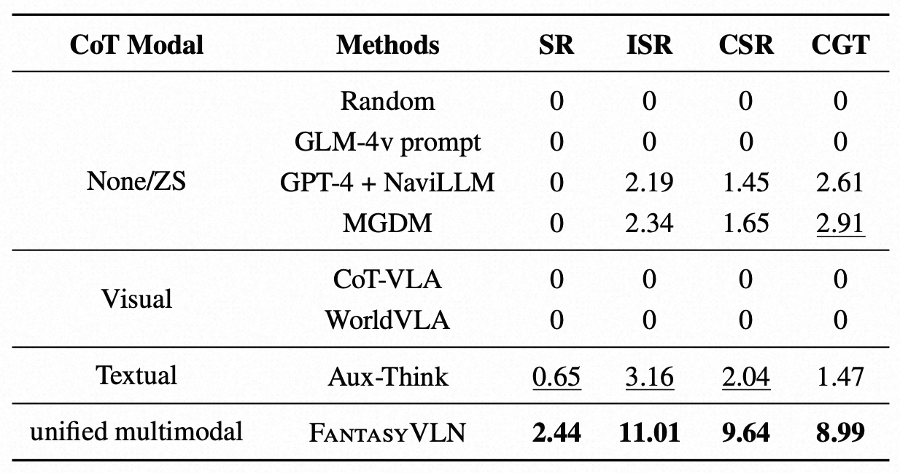
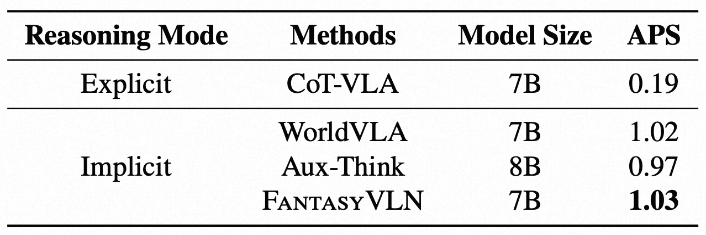
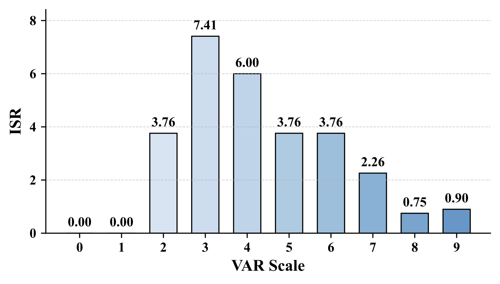
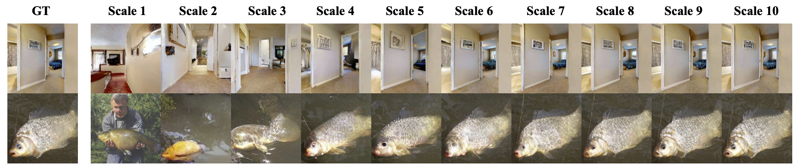
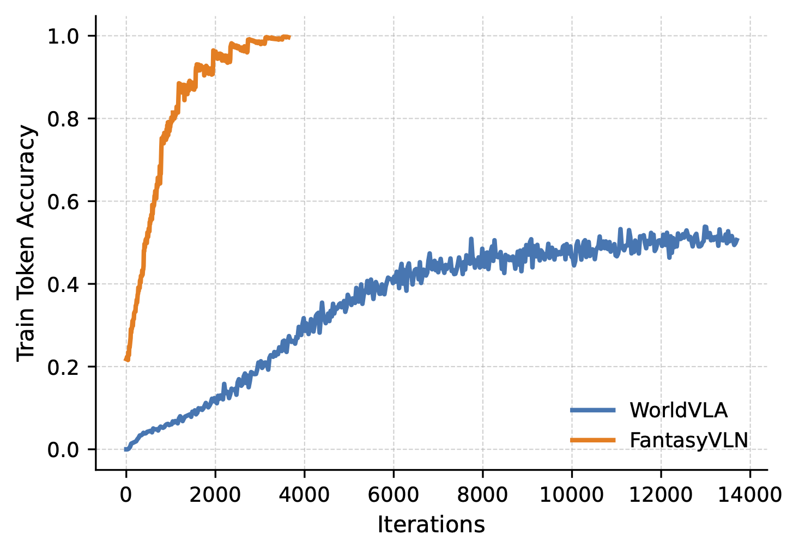

Achieving human-level performance in Vision-and-Language Navigation (VLN) requires an embodied agent to jointly understand multimodal instructions and visual-spatial context while reasoning over long action sequences. Recent works, such as NavCoT and NavGPT-2, demonstrate the potential of Chain-of-Thought (CoT) reasoning for improving interpretability and long-horizon planning. Moreover, multimodal extensions like OctoNav-R1 and CoT-VLA further validate CoT as a promising pathway toward human-like navigation reasoning. However, existing approaches face critical drawbacks: purely textual CoTs lack spatial grounding and easily overfit to sparse annotated reasoning steps, while multimodal CoTs incur severe token inflation by generating imagined visual observations, making real-time navigation impractical. In this work, we propose FantasyVLN, a unified implicit reasoning framework that preserves the benefits of CoT reasoning without explicit token overhead. Specifically, imagined visual tokens are encoded into a compact latent space using a pretrained Visual AutoRegressor (VAR) during CoT reasoning training, and the model jointly learns from textual, visual, and multimodal CoT modes under a unified multi-CoT strategy. At inference, our model performs direct instruction-to-action mapping while still enjoying reasoning-aware representations. Extensive experiments on LH-VLN show that our approach achieves reasoning-aware yet real-time navigation, improving success rates and efficiency while reducing inference latency by an order of magnitude compared to explicit CoT methods.
FantasyVLN is a unified multimodal Chain-of-Thought (CoT) reasoning framework that enables efficient and precise navigation based on natural language instructions and visual observations. FantasyVLN combines the benefits of textual, visual, and multimodal CoT reasoning by constructing a unified representation space across these reasoning modes. To enable efficient reasoning, we align these CoT reasoning modes with non-CoT reasoning during training, while using only non-CoT reasoning at test time. Notably, we perform visual CoT in the latent space of a VAR model, where only low-scale latent representations are predicted. Compared to traditional pixel-level visual CoT methods, our approach significantly improves both training and inference efficiency.
The table below presents the quantitative results of navigation accuracy across different VLN methods on the LH-VLN benchmark. FantasyVLN achieves superior performance across all metrics, with SR, ISR, CSR, and CGT of 2.44, 11.01, 9.64, and 8.99, respectively, significantly surpassing all baselines.
We report APS (action per second) to quantify the inference efficiency of different CoT reasoning methods. As expected, Implicit reasoning models, including FantasyVLN, Aux-Think, and WorldVLA, exhibit comparable efficiency and outperform the explicit approach CoT-VLA by a substantial margin.
To select the optimal VAR scale for latent V-CoT learning, we conduct comprehensive ablation studies on a subset of LH-VLN. We first report the ISR results across different VAR scales, ranging from 1 to 10. The results show that scale 4 achieves the best performance.
Qualitative comparison of image reconstruction results produced by the VAR model using latent inputs across different scales. For each image, the VAR model receives the ground truth latents up to a specified scale and predicts all remaining scales; the final reconstruction is obtained by decoding the combined ground truth and predicted latents.
Unlike WorldVLA, which suffers from slow convergence due to high-dimensional pixel reconstruction, FantasyVLN achieves rapid and stable training by reasoning in a compact latent space via CompV-CoT. This significantly reduces optimization complexity, leading to efficient learning and enhanced navigation accuracy.
@article{zuo2026fantasyvln,
title={FantasyVLN: Unified Multimodal Chain-of-Thought Reasoning for Vision-Language Navigation},
author={Zuo, Jing and Mu, Lingzhou and Jiang, Fan and Ma, Chengcheng and Xu, Mu and Qi, Yonggang},
journal={arXiv preprint arXiv:2601.13976},
year={2026}
}